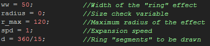
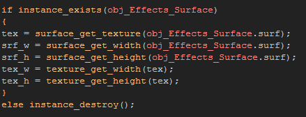
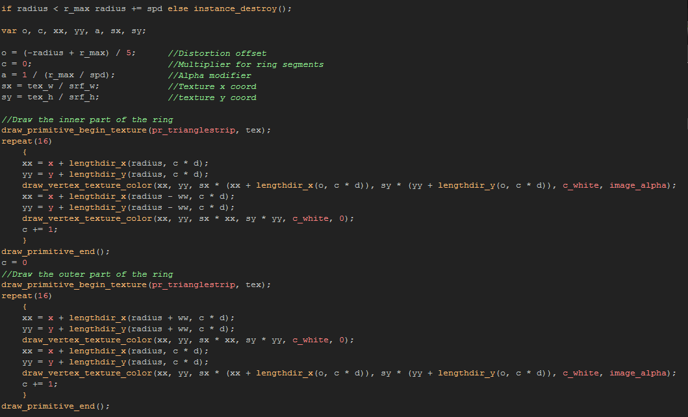
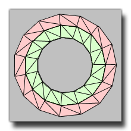
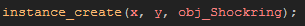

Tutorial
Page 8 of 10
Special Effects Part II
Another thing that surfaces can be used for is texturing. They can be called on using special functions in GameMaker and their contents used for giving primitives and 3D models a texture. This can
give rise to all sorts of marvelous effects like full screen distortion or blurring, as well as localised effects like heat-waves and predator-like "cloaking" fields. Our tutorial is going to use it to create a shock-wave
effect that will be shown with every explosion.
Make a new object, and call it "obj_Shockring". Give it a depth of -800 so it will appear on top of most instances in the room (but not all) and add a create event. In the create event we are going to first
initialise some variables, then get the texture from the surface to use. First the variables (commented to help explain them):

And now the surface codes:

The above codes first make sure that the surface object actually exists, always an essential thing to do when dealing with object variables directly as we are doing here, and then we store the surface as a texture, then
store the width and height of the surface in variables, as we do with the texture width and height. Why do we need all these? Well, for the effect we are going to create we need to texture some primitives
(basic polygons) with a texture, and so we need to have a "handle" for the texture as well as the width and height. These are different from the surface width and height as they are always expressed as a value from
0 to 1.
Now that you have this done, you should add a draw event to the object and in it you will add the following codes:

That code looks intimidating! But I can assure you that it's not... You just have to understand what it does and do a little maths to see what's going on. Basically, we are creating two separate rings from polygons.
A polygon is the base block for almost all drawing and GameMaker (and most games) uses this for drawing it's graphics. It is usually just a simple triangle, but what you do is joint up a series of these
triangles to make a more complex shape, in this case a "ring" (although it's really a 15 sided polygon but in a game with alpha and textures this is not readily noticeable). Below you can see an image of our polygon
ring with no textures and each individual triangle shown:

Compare this image with our code... Can you see what's going on now? Let's just go through each section of the code briefly:
- First we deal with the necessary variables. The comments explain them.
- Next we have to start drawing the inner-most ring, with the inside vertices's having an alpha of 0 (to get a nice fade) and the texture applied correctly, while the outer vertices's (which form the central part of
the final ring) using the
image_alpha value and having the texture offset (to give the distortion effect).
- Finally we draw the outer ring, exactly the same as above, only now the vertex order is reversed so that the full alpha offset texture is drawn in the inner vertexes, while the outer ones have the correct texture
and an alpha of 0.
Note too, that you could update the texture from the surface every step by copying the create event surface codes into the draw event, and for effects that need to update the image precisely every step that is what we
would do, but for this effect, getting the texture from the surface once is perfectly.
The last thing we have to do now is create the effect in out game! This is simply done by adding the following into the create event of the "obj_Explosion":

Now play the game and see just what this effect does... I think you'll agree that it looks great and adds a lot to the graphical depth of the game!
Click on the Next button to go to the next page of the tutorial.